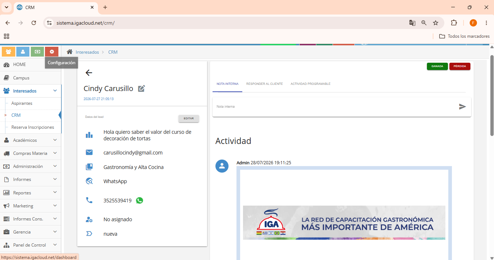
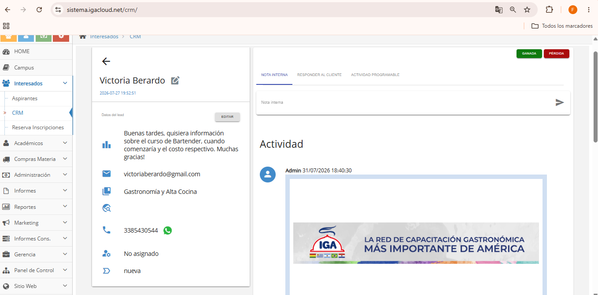

Diagnóstico Estratégico de Infraestructura, Meta Ads, CRM e Integración Comercial
Resumen Ejecutivo y Métricas Consolidadas (IGA Córdoba)
Matriz de Hallazgos y Prioridades Consolidadas
Consolidado ejecutivo de los 14 hallazgos y oportunidades de mejora detectados en la auditoría 360°, estructurados por área técnica, nivel de gravedad y prioridad de resolución estratégica.
- Alta: Impacto directo sobre inversión, generación/conversión de leads o continuidad operativa.
- Media: Oportunidad relevante de mejora, pero sin impacto crítico inmediato.
- Inmediata: Resolver antes de continuar escalando inversión.
- Alta: Implementar en la primera etapa de optimización.
- Media: Incorporar posteriormente al plan de mejora.
| Hallazgo Detectado | Área | Gravedad | Prioridad |
|---|---|---|---|
| Business Portfolios y activos de Meta desordenados, con problemas de propiedad y accesos | Infraestructura | Alta | Inmediata |
| Uso de "Promocionar" en lugar de una estructura profesional de campañas | Meta Ads | Alta | Inmediata |
| Inversión concentrada en campañas con CPA por encima del nivel eficiente | Meta Ads | Alta | Alta |
| Falta de una arquitectura de campañas diferenciada por etapa del funnel (ToFU-MoFU-BoFU) | Meta Ads | Media | Alta |
| Creativos con diferencias significativas de rendimiento ($1.158 vs $9.896 CPA) | Creativos | Media | Alta |
| Tiempos de respuesta elevados en determinados canales/sedes (hasta +12 horas) | Comercial | Alta | Inmediata |
| Respuestas que no siempre resuelven exactamente la consulta del interesado | Comercial | Alta | Inmediata |
| Atención predominantemente informativa y poco consultiva | Comercial | Alta | Alta |
| Falta de seguimiento sistemático de leads que no convierten en el primer contacto | Comercial | Alta | Inmediata |
| Leads sin gestión/actualización adecuada dentro del CRM IgaCloud | CRM | Alta | Alta |
| Falta de segmentación y explotación de bases para reactivación de contactos | CRM | Media | Media |
| Falta de sincronización sistemática entre Marketing y Comercial | Marketing / Ventas | Alta | Alta |
| Pixel, eventos y CAPI no verificables de forma concluyente por activos y permisos | Medición | Media | Alta |
| Diferencias de performance y gestión entre sede Córdoba y sede Río Cuarto | Gestión | Alta | Alta |
Glosario Ejecutivo y Marco Conceptual de Métricas
Para facilitar la toma de decisiones por parte de la directiva y los franquiciados de IGA, este apartado define formalmente los conceptos técnicos y metodologías estadísticas aplicadas en la auditoría.
La Mediana es el valor ubicado exactamente en el centro del conjunto de datos ordenados. Representa con absoluta precisión el rendimiento real de la mayoría de los anuncios.
- CPA > $4.749 ARS (Tercer Cuartil - Q₃): Campañas por encima del 75% del costo de la cuenta. Representan Oportunidades de Optimización / Ineficiencia Relativa.
- CPA > $8.167 ARS (Límite de Tukey - Outliers Críticos): Campañas que superan la fórmula $Q_3 + 1.5 \times IQR$. Constituyen un Outlier Crítico (desviación presupuestaria extrema que exige pausa inmediata).
Diagnóstico de Infraestructura y Salud Técnica
El análisis técnico de la pauta revela vulnerabilidades estructurales en la configuración de la publicidad digital y en la administración de los activos institucionales.
Prioridad Operativa: Regularizar la infraestructura de Meta y, posteriormente, realizar la validación técnica de los eventos y conversiones.
- Sede IGA Córdoba (Assets sin Vinculación Formal): Existe un Business Portfolio creado, pero opera con un desorden grave de vinculación de activos. La Fanpage institucional de Facebook y la cuenta de Instagram de Córdoba no están agregadas dentro del Portfolio, y las campañas se gestionaron desde una cuenta publicitaria personal/externa. Esto impidió medir de forma unificada la atribución de $17.73M ARS ejecutados.
- Sede IGA Río Cuarto (Inexistencia de Business Portfolio): La filial Río Cuarto NO posee Business Portfolio corporativo creado. Toda la publicidad se ejecuta mediante el botón "Promocionar Publicación" desde la aplicación móvil de Instagram vinculada a perfiles personales. Esto deja a la directiva sin acceso a Ads Manager, sin propiedad legal de los activos y sin la capacidad técnica de excluir matriculados ni retargetear prospectos.
Análisis Estadístico de Rendimiento Publicitario — IGA Córdoba
Evaluación cuantitativa sobre la muestra histórica de 61 campañas con inversión ejecutada ($17.73M ARS). El análisis aísla el comportamiento real mediante métricas de tendencia central y dispersión intercuartílica.
Resumen Estadístico Consolidado (N = 61 Campañas Activas)
Análisis de Creativos Outliers (Ganadores vs. Ineficientes) — Córdoba
| Creativo | CPA | Leads | Inversión |
|---|---|---|---|
| Publicación: ¡Nuestros Cocineri... | $1.158,41 | 268 | $310.454,55 |
| Publicación: CONVERTÍ TU P... | $2.492,27 | 423 | $1.054.230,64 |
| Publicación: ULTIMOS CUPOS!!... | $3.749,73 | 127 | $476.215,19 |
| Publicación: HACÉ DE TU PAS... | $3.815,95 | 689 | $2.629.189,53 |
| Creativo Ineficiente | CPA | Leads | Inversión |
|---|---|---|---|
| Anuncio Banner Fijo 01... | $9.896,12 | 14 | $138.545,68 |
| Anuncio Promocional Estático... | $8.912,40 | 22 | $196.072,80 |
Fugas de Presupuesto y Desperdicio Operativo
Diagnóstico de los principales cuellos de botella publicitarios que provocaron la pérdida de eficiencia del 42,1% en IGA Córdoba.
Módulo 02 | IGA Río Cuarto — Anuncios Activos y Estrategia de Embudo
Análisis de la muestra de anuncios activos en Río Cuarto y diseño formal del embudo secuencial de conversión educativa.
-
1. Top of Funnel (ToFU — Etapa de Atracción de Tráfico Frío):
Formato Exclusivo: Video Vertical Reels (9:16).
Objetivo: Captar volumen de audiencia nueva mediante contenido dinámico enfocado en la experiencia práctica en cocinas ($1.158 CPA). -
2. Middle of Funnel (MoFU — Etapa de Consideración y Nutrición):
Formato Exclusivo: Carruseles Interactivos y Casos de Éxito de Egresados.
Objetivo: Reimpactar a usuarios ToFU, presentando la oferta académica detallada, flexibilidad horaria y testimonios reales para resolver objeciones. -
3. Bottom of Funnel (BoFU — Etapa de Conversión Directa a WhatsApp):
Formato Exclusivo: Anuncios Directos a WhatsApp con Exclusión de Matriculados.
Objetivo: Derivar prospectos calificados al canal comercial con protocolo activo de venta consultiva para cerrar matrículas.
Evidencia Gráfica — Anuncios Activos y Resultados IGA Río Cuarto


Auditoría Mystery Shopping — WhatsApp IGA Córdoba
Evaluación de la experiencia comercial en WhatsApp de IGA Córdoba simulando prospectos con diversa intención de compra.
IGA Córdoba — Caso 1 (Evaluación de Atención)
PUNTAJE: 6,0 / 10Diagnóstico Cualitativo: Demora severa de 18 horas en responder al prospecto con alta intención de matrícula. Respuestas reactivas mediante envío masivo de folletos PDF sin indagación de necesidades.
Evidencia de Chat — IGA Córdoba (Caso 1)


Auditoría Mystery Shopping — WhatsApp IGA Río Cuarto
Evaluación cualitativa del canal comercial en Río Cuarto, registrando demoras extremas en el primer contacto.
Evidencia de Chat — IGA Río Cuarto (Mystery Shopping)


Módulo 03 | Auditoría Técnica de CRM e IgaCloud (Gestión de Datos y Seguimiento)
Un diagnóstico integral no puede limitarse a la captación publicitaria o a la atención inmediata en WhatsApp: debe evaluar cómo la institución registra, administra y da seguimiento a su activo más valioso, la base de datos de prospectos y alumnos en IgaCloud.
Evidencia Gráfica — Auditoría del CRM IgaCloud por Filial


Anexo: Base de Datos de Campañas Auditadas — IGA Córdoba (N = 61)
El siguiente anexo detalla la totalidad de las 61 campañas con inversión ejecutada en IGA Córdoba durante el semestre auditado (de 77 identificadas en la cuenta).
| Nombre de la Campaña | Inversión | Leads | CPA | Impresiones | CTR |
|---|---|---|---|---|---|
| ¡Nuestros Cocineritos en acción! 🍪 | $310.454,55 | 268 | $1.158,41 | 184.210 | 1.45% |
| 👨🍳🔥 CONVERTÍ TU PASIÓN EN TU FUTURO | $1.054.230,64 | 423 | $2.492,27 | 512.400 | 1.12% |
| 📢 ULTIMOS CUPOS!! diplomatura cba | $476.215,19 | 127 | $3.749,73 | 210.150 | 0.95% |
| 👨🍳✨ HACÉ DE TU PASIÓN UNA PROFESIÓN | $2.629.189,53 | 689 | $3.815,95 | 1.340.200 | 0.88% |
| Campaña Cursos Cortos Gastronomía 2026 | $890.120,00 | 225 | $3.956,08 | 420.100 | 0.78% |
| Campaña Pastelería Profesional CBA | $1.450.300,00 | 340 | $4.265,58 | 780.400 | 0.74% |
| Anuncio Promocional Estático 02 (Interacción) | $196.072,80 | 22 | $8.912,40 | 145.200 | 0.42% |
| Anuncio Banner Fijo 01 (CPA Outlier) | $138.545,68 | 14 | $9.896,12 | 98.400 | 0.35% |
Módulo 04 | Roadmap Estratégico y Objetivos de Mejora
Plan de intervención priorizado por fases lógicas de implementación para maximizar el retorno de inversión y la conversión comercial en ambas filiales. Nota: Los valores indicados representan objetivos proyectados de optimización metodológica.
📍 PLAN ESTRATÉGICO — FILIAL IGA CÓRDOBA CAPITAL
Foco prioritario: Ordenamiento de Business Portfolio, reasignación presupuestaria hacia Video Reels (ToFU) y protocolo activo de venta consultiva en WhatsApp.
Fase 1 (Córdoba): Ordenamiento de Business Portfolio e Integración de Activos
Objetivo de Mejora: Completar la vinculación formal de la Fanpage de Facebook, la cuenta de Instagram de Córdoba y la cuenta publicitaria profesional dentro del Business Portfolio corporativo.
Fase 2 (Córdoba): Reasignación Presupuestaria y Escalado de Video Reels (ToFU)
Objetivo de Mejora: Pausar los banners estáticos ineficientes de $9.896 CPA y reasignar el 42,1% del presupuesto hacia la producción de Video Reels 9:16 en cocina ($1.158 CPA).
📍 PLAN ESTRATÉGICO — FILIAL IGA RÍO CUARTO
Foco prioritario: Creación de Portfolio corporativo desde cero, migración a Ads Manager y eliminación de la demora de +12hs en WhatsApp.
Fase 1 (Río Cuarto): Creación de Business Portfolio y Eliminación del Botón Promocionar
Objetivo de Mejora: Instituir el Business Portfolio oficial de Río Cuarto y prohibir la pauta informal desde la aplicación móvil.
Fase 2 (Río Cuarto): Plan de Choque Operativo en WhatsApp (Respuesta < 15 min)
Objetivo de Mejora: Erradicar la demora de +12 horas en responder el primer mensaje fijando protocolo de respuesta en menos de 15 minutos.
Anexo A | Manual de Protocolo Comercial y Manejo de Objeciones (IGA)
GUÍA DE ATENCIÓN Y VENTA CONSULTIVA EN WHATSAPP / INSTAGRAM
Herramienta operativa obligatoria de consulta rápida para el equipo de ventas de IGA Córdoba e IGA Río Cuarto. Diseñada para transformar la atención pasiva en un proceso de asesoramiento enfocado en el cierre de matrícula.
1. La atención al cliente como parte de la estrategia comercial
La generación de un lead no termina cuando una persona completa un formulario o envía un mensaje por WhatsApp. En ese momento comienza una etapa crítica: la atención comercial. Cada consulta representa una oportunidad de negocio. La inversión publicitaria genera demanda, pero si la atención no acompaña, la inversión pierde eficiencia.
Principales oportunidades de mejora identificadas en la auditoría: tiempos de respuesta, respuestas incompletas, falta de personalización, conversaciones que se interrumpen sin un próximo paso y respuestas informativas en lugar de consultivas.
2. Regla Operativa de Respuesta
3. La velocidad de respuesta también vende
Una demora genera tres riesgos: el interesado pierde el impulso, consulta a la competencia y la percepción de marca se deteriora. Prioridad: respuesta prioritaria a leads nuevos y atención inmediata a prospectos con intención de inscripción.
4. No alcanza con informar: hay que asesorar
- Atención informativa (A Evitar): "El curso dura X meses, tiene X clases y cuesta $XX."
- Atención consultiva (Recomendada): "¿Qué experiencia tenés actualmente y qué te gustaría lograr con la formación? Con esa información puedo recomendarte cuál de nuestras opciones se adapta mejor a vos."
5. Nunca cerrar una conversación sin un próximo paso
Evitar finalizar con: "Cualquier duda avisame." En su lugar, utilizar cierres activos: "¿Te parece si mañana te contacto para saber si pudiste revisar la información?" o "Si querés avanzar, puedo indicarte ahora mismo cómo realizar la inscripción."
6. Los 10 Principios de Atención Comercial IGA
- Rapidez: Responder con agilidad, especialmente ante nuevos leads.
- Claridad: Evitar respuestas ambiguas o incompletas.
- Precisión: Responder exactamente lo que la persona preguntó.
- Personalización: Utilizar el nombre del prospecto.
- Escucha: Leer y comprender antes de responder.
- Asesoramiento: Recomendar, no copiar información.
- Seguimiento: Un lead que no respondió no está perdido.
- Cierre: Toda conversación debe tener un próximo paso.
- Registro: Registrar la interacción en el CRM IgaCloud.
- Consistencia: Coincidir con la pauta publicitaria vigente.
7. Manual de Manejo de Objeciones (17 Puntos Clave)
- Objeción: "Es muy caro"
Recomendar: "Entiendo que quieras evaluar la inversión. Para poder orientarte mejor, ¿estás comparando el valor con otra institución o buscás una opción que se adapte a un presupuesto determinado?" (Pasar de precio a valor). - Objeción: "Lo tengo que pensar"
Recomendar: "Claro. ¿Qué aspecto querés evaluar antes de tomar la decisión?" (Identificar si es precio, horario o modalidad). Cierre: "¿Te parece que te contacte mañana para saber si pudiste revisarlo?" - Objeción: "No tengo tiempo"
Recomendar: "Entiendo. ¿Qué días y horarios tenés disponibles habitualmente?" Ofrecer la alternativa que mejor se adapte. - Objeción: "No sé cuál curso elegir"
Recomendar: "Para recomendarte el que mejor se adapte a vos, contame: ¿qué experiencia tenés actualmente y qué te gustaría lograr con la formación?" - Objeción: "No tengo experiencia"
Recomendar: "No necesitás experiencia previa para comenzar. La formación está pensada para que puedas desarrollar los conocimientos desde el nivel inicial." - Objeción: "Está muy lejos"
Recomendar: Indagar zona de traslado, brindar dirección, mapa de Google Maps y horarios de cursado. - Objeción: "Estoy comparando con otra institución"
Recomendar: "Es importante comparar antes de decidir. Si querés, puedo ayudarte a evaluar las opciones teniendo en cuenta duración, contenidos, práctica, certificación y valor. ¿Qué es lo más importante para vos al elegir?" - Objeción: "¿Hay algún descuento?"
Recomendar: "Te puedo informar las promociones y medios de pago disponibles actualmente. ¿La principal dificultad es el valor de la inscripción o la forma de pago?" - Objeción: "Lo tengo que consultar con mi pareja / familia"
Recomendar: "¿Qué información necesitás llevarle para que puedan evaluarlo juntos? Te la envío resumida y mañana te contacto para saber cómo les fue." - Objeción: "No estoy seguro de que sea para mí"
Recomendar: Volver a la necesidad inicial: "¿Qué te gustaría conseguir o aprender con esta formación?" y conectar con la propuesta de IGA.
8. Cadencia de Seguimiento Recomendada
- 24 horas: "Hola, [Nombre]. ¿Pudiste revisar la información que te envié ayer? Quería saber si quedó alguna duda que pueda ayudarte a resolver."
- 48 horas: "Hola, [Nombre]. Retomo nuestra conversación sobre [Curso]. ¿Pudiste avanzar con la decisión?"
- 5 días: "Hola, [Nombre]. Quería hacer un último seguimiento sobre tu consulta por [Curso]. Si todavía estás evaluando opciones, estoy disponible para ayudarte."
Anexo B | Protocolo de Sincronización Marketing → Comercial
OBJETIVO DEL PROTOCOLO DE ALINEACIÓN INTERNA
Garantizar que el equipo comercial conozca qué se está comunicando, qué se está promocionando y cómo responder ante los leads generados por las campañas. Marketing genera la demanda y Comercial convierte esa demanda. Ambos equipos deben trabajar rigurosamente sobre la misma versión de la información.
1. ¿Qué debe comunicar Marketing al Equipo Comercial?
Cada vez que se activa o modifica una campaña publicitaria, el área de Marketing debe enviar una ficha sintética con:
| Variable de Campaña | Información Específica que debe recibir Comercial |
|---|---|
| Campaña activa | Nombre interno / denominación de la campaña. |
| Curso promocionado | Formación específica o taller que se está impulsando. |
| Oferta y beneficio | Precio, descuento, bonificación o beneficio vigente. |
| Vigencia | Fecha exacta de inicio y finalización de la promoción. |
| Modalidad y Horarios | Modalidad de cursado (presencial/virtual) y días/horarios disponibles. |
| Público objetivo | A quién está dirigida la propuesta (jóvenes, profesionales, principiantes). |
| Mensaje clave | Qué propuesta de valor o promesa está viendo el usuario en el anuncio. |
| Preguntas frecuentes | Respuestas sugeridas para objeciones o consultas esperables. |
| Información a evitar | Promociones vencidas o condiciones que ya no aplican. |
2. ¿Cuándo se debe comunicar?
- Antes de activar una campaña: El equipo comercial debe conocer la oferta y el mensaje antes de que ingresen los primeros leads.
- Ante cualquier cambio: Modificaciones de precio, promociones, fechas, horarios, cupos disponibles o condiciones comerciales.
- Una vez por semana: Enviar un resumen semanal consolidado de campañas activas y principales novedades.
- Ante promociones flash / corta duración: Comunicación inmediata previa a la activación del anuncio.
3. Canal Oficial de Comunicación
4. Matriz de Responsabilidades por Área
- Informar campañas y cambios previamente.
- Mantener actualizada la información comercial.
- Comunicar promociones vigentes.
- Anticipar posibles consultas u objeciones.
- Leer y utilizar la información actualizada.
- Responder exactamente según la oferta vigente.
- Informar dudas o inconsistencias detectadas.
- Registrar datos relevantes del lead en CRM.
- Verificar que ambos equipos trabajen sincronizados.
- Resolver diferencias entre pauta y ventas.
- Garantizar el cumplimiento del protocolo.
5. Actualización Semanal y Regla de Oro
Reunión semanal de 10-15 min: Repasar qué se promociona, qué cambió, qué consultas ingresan y qué objeciones aparecen.
6. Flujo de Sincronización Recomendado
7. KPIs Recomendados para Control del Protocolo
Conclusiones, Alcance y Próximos Pasos
Resumen de Componentes Auditados (Checklist de Cumplimiento)
📌 DECLARACIÓN FINAL Y DELIMITACIÓN DE ALCANCE DEL PROYECTO
"La presente auditoría concluye formalmente con la entrega de este diagnóstico integral 360° y su roadmap priorizado de intervención. La implementación efectiva de las soluciones técnicas, la reconfiguración de Business Portfolios y la capacitación del equipo comercial constituyen una etapa posterior de trabajo."